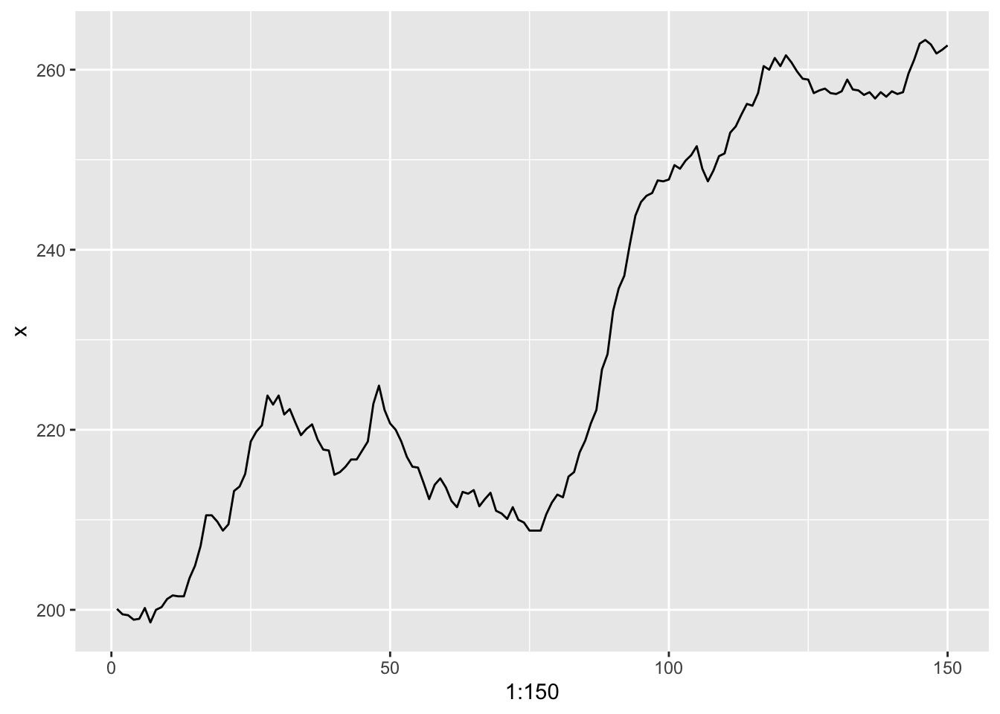
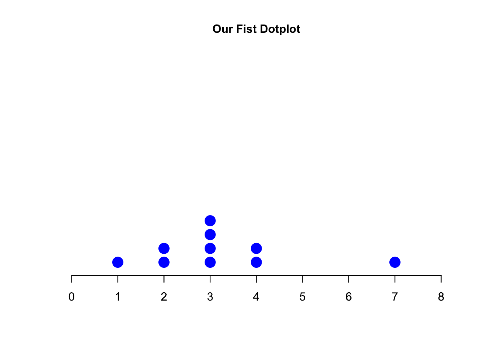
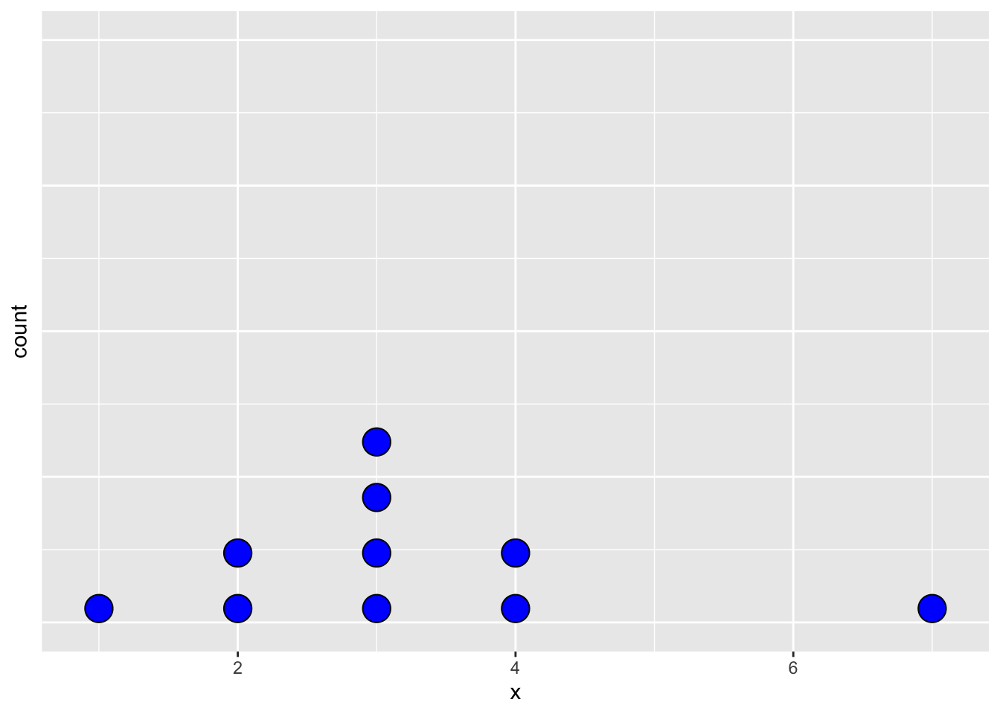

3+4[1] 73*4[1] 123^4[1] 813/4[1] 0.75sin(0)[1] 03+4[1] 73*4[1] 123^4[1] 813/4[1] 0.75sin(0)[1] 0x = 5
print(x)[1] 5x <- 7
print(x)[1] 7x[1] 7x = 'the best class ever'
x[1] "the best class ever"x = c(4,7,2,3)
x[1] 4 7 2 3x^2[1] 16 49 4 9x*x[1] 16 49 4 9sum(x)[1] 16prod(x)[1] 168length(x)[1] 4mean(x)[1] 4y = c(1, 2, -3, 0.5)
x*y[1] 4.0 14.0 -6.0 1.5x+y[1] 5.0 9.0 -1.0 3.5x^y[1] 4.000000 49.000000 0.125000 1.732051BJsalesTime Series:
Start = 1
End = 150
Frequency = 1
[1] 200.1 199.5 199.4 198.9 199.0 200.2 198.6 200.0 200.3 201.2 201.6 201.5
[13] 201.5 203.5 204.9 207.1 210.5 210.5 209.8 208.8 209.5 213.2 213.7 215.1
[25] 218.7 219.8 220.5 223.8 222.8 223.8 221.7 222.3 220.8 219.4 220.1 220.6
[37] 218.9 217.8 217.7 215.0 215.3 215.9 216.7 216.7 217.7 218.7 222.9 224.9
[49] 222.2 220.7 220.0 218.7 217.0 215.9 215.8 214.1 212.3 213.9 214.6 213.6
[61] 212.1 211.4 213.1 212.9 213.3 211.5 212.3 213.0 211.0 210.7 210.1 211.4
[73] 210.0 209.7 208.8 208.8 208.8 210.6 211.9 212.8 212.5 214.8 215.3 217.5
[85] 218.8 220.7 222.2 226.7 228.4 233.2 235.7 237.1 240.6 243.8 245.3 246.0
[97] 246.3 247.7 247.6 247.8 249.4 249.0 249.9 250.5 251.5 249.0 247.6 248.8
[109] 250.4 250.7 253.0 253.7 255.0 256.2 256.0 257.4 260.4 260.0 261.3 260.4
[121] 261.6 260.8 259.8 259.0 258.9 257.4 257.7 257.9 257.4 257.3 257.6 258.9
[133] 257.8 257.7 257.2 257.5 256.8 257.5 257.0 257.6 257.3 257.5 259.6 261.1
[145] 262.9 263.3 262.8 261.8 262.2 262.7help("BJsales")
help(BJsales)x[1] 4 7 2 3set.seed(123)
sample(x,2)[1] 2 3sample(BJsales, 10) [1] 203.5 220.7 260.0 216.7 262.7 261.8 233.2 235.7 259.6 237.1library(tidyverse)── Attaching packages ─────────────────────────────────────── tidyverse 1.3.2 ──
✔ ggplot2 3.3.6 ✔ purrr 0.3.4
✔ tibble 3.1.8 ✔ dplyr 1.0.9
✔ tidyr 1.2.0 ✔ stringr 1.4.0
✔ readr 2.1.2 ✔ forcats 0.5.1
── Conflicts ────────────────────────────────────────── tidyverse_conflicts() ──
✖ dplyr::filter() masks stats::filter()
✖ dplyr::lag() masks stats::lag()BJsales_df <- as_tibble(BJsales)
BJsales_df %>%
ggplot(aes(1:150,x))+
geom_line()Don't know how to automatically pick scale for object of type ts. Defaulting to continuous.
x = c(4,7,2,3, 3,3,3,4,2,1)
# introduce the following plot step by step
stripchart(x, method = 'stack',
at = 0.05, pch = 20, xlim = c(0,8),
col = 'blue', cex = 3, frame.plot = F,
main = 'Our Fist Dotplot', cex.main = 1)
axis(1, at = seq(1, 8, by = 1))
# ignore y-axis
x = c(4,7,2,3, 3,3,3,4,2,1)
df = as_tibble(x)
df %>%
ggplot(aes(x)) +
geom_dotplot(fill = 'blue', stackratio = 2) +
theme(axis.text.y=element_blank(),
axis.ticks.y=element_blank())Bin width defaults to 1/30 of the range of the data. Pick better value with `binwidth`.